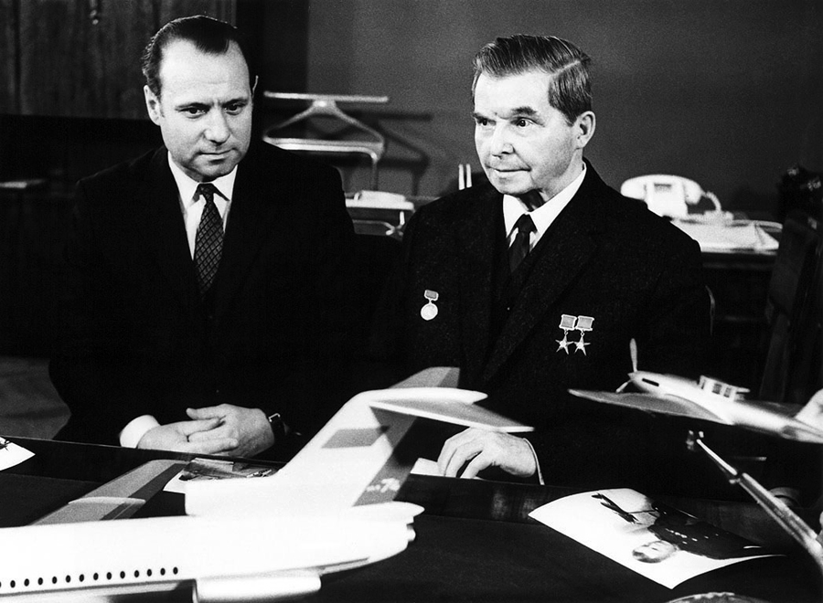
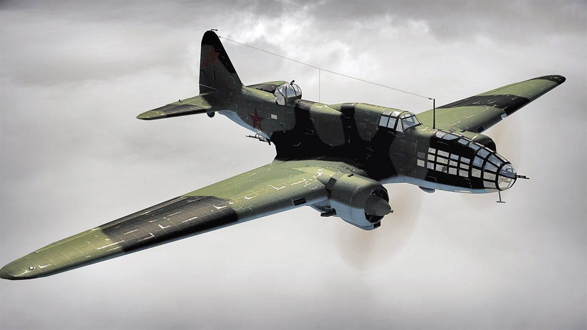
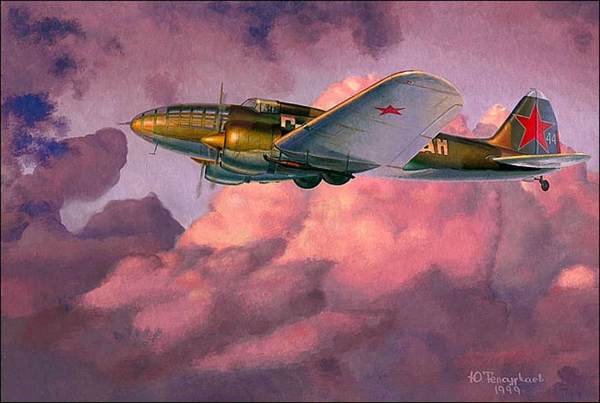
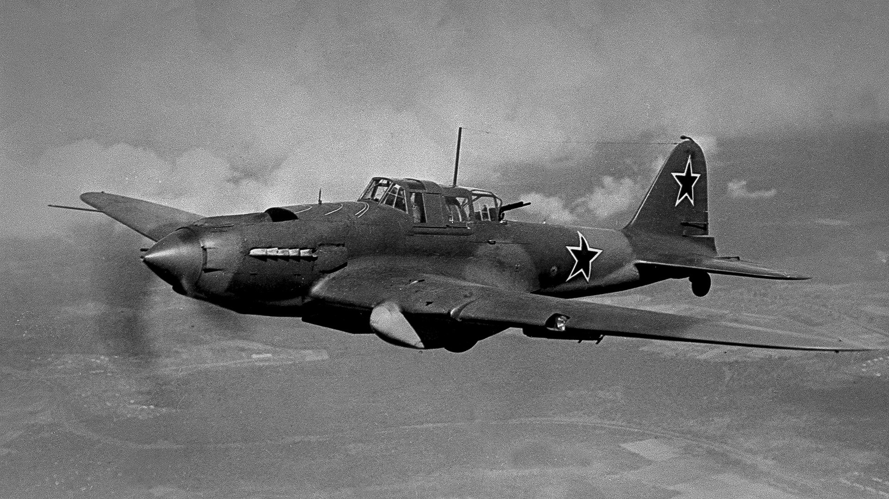
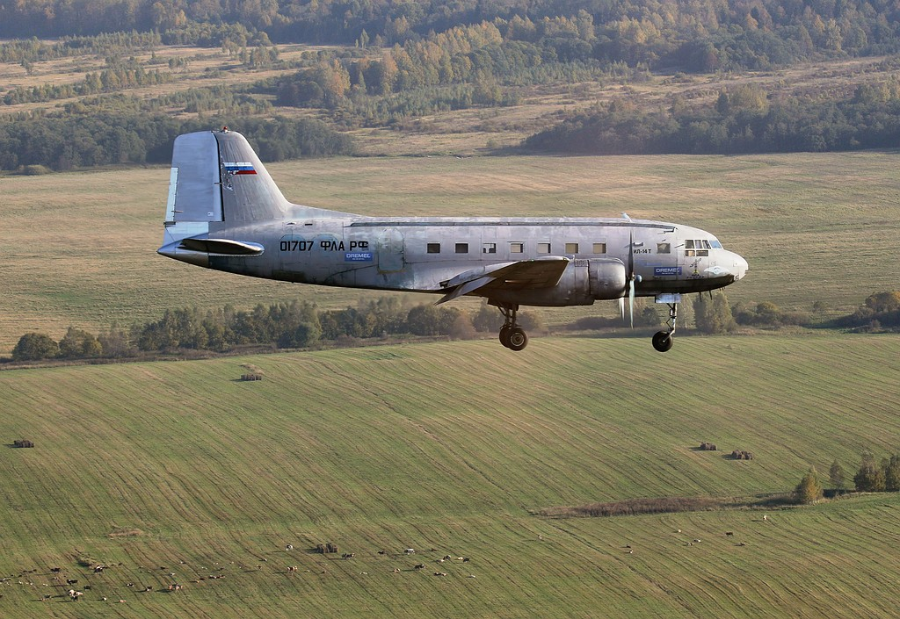
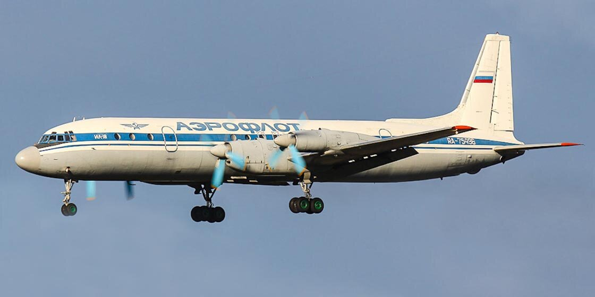
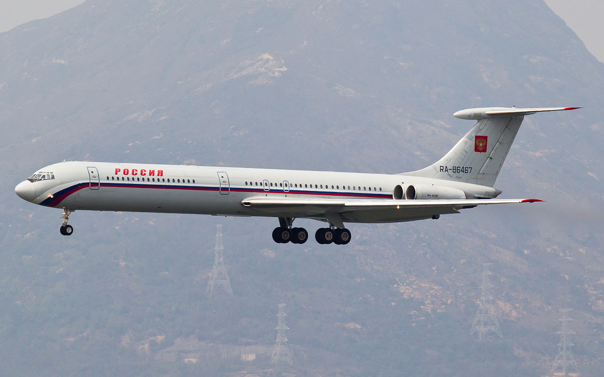

Дело всей жизни

В 1933 году Сергея Владимировича назначили начальником Центрального конструкторского бюро авиазавода имени В. Р. Менжинского, где он одновременно руководил конструкторской бригадой, которая в 1935 году была преобразована в Опытное конструкторское бюро, а Ильюшин являлся его Главным конструктором вплоть до 1970 года. Самым первым самолетом, конструкторским бюро Ильюшина, стал первый двухмоторный бомбардировщик ЦКБ-26 (впоследствии ДБ-3)
Бомбардировщик ЦКБ-26 (впоследствии ДБ-3)

В 1936 году самолет поступил на вооружение Красной Армии, и на нем был установлен первый советский авиационный мировой рекорд (летчиком-испытателем В. К. Коккинаки). На гражданском варианте ДБ-3 были совершены 2 дальних беспосадочных перелет из Москвы в Северную Америку и на Дальний Восток (1938—1939 которые являлись выдающимися для своего времени. В дальнейшем по приказу наркома авиационной промышленности самолеты назывались в честь своего изобретателя Ильюшина «Ил…».
Самолет Ил-4

Самолеты Ил-4 прославились бомбардировками Берлина вначале Великой Отечественной войны, осуществившие ряд налётов на Берлин в августе-сентябре 1941 года. Варианта конструкции этого самолета стали торпедоносцы, фоторазведчики и самолеты сопровождения. Самым известным и массовым штурмовиком в годы войны стал самолет Ил-2 — результат огромной работы выдающегося русского конструктора Сергея Владимировича Ильюшина. Этих штурмовиков было выпущено больше, чем самолетов других марок в отдельности за всю историю боевых самолетов человечества! Кроме того, обладая высокими техническими и боевыми характеристиками, Ил-2 наносил сокрушительные удары по войскам фашистов, которые боялись его и называли «летающим танком» и «черной смертью».

Принципиальная новизна самолёта состояла в том, что слоёная броня не просто защищала экипаж и жизненно важные органы самолёта, но также и входила в состав силовой конструкции планера. Очень значительным достоинством самолёта было то, что на него устанавливался один мотор (Ам-38, 1720 л.с.). Таким образом Ильюшин сэкономил для страны огромное количество ресурсов и времени. Изначально предполагалось выпускать двухместный вариант штурмовика, но в это дело вмешался Сталин, всегда во всём разбиравшийся лучше любого специалиста, и на конвейер поставили одноместный самолёт.
Отсутствие стрелка привело к огромным потерям: на беззащитные с задней полусферы «Илы» охотились даже огромное количество ресурсов и времени. Изначально предполагалось выпускать двухместный вариант штурмовика, но в это дело вмешался Сталин, всегда во всём разбиравшийся лучше любого специалиста, и на конвейер поставили одноместный самолёт. Отсутствие стрелка привело к огромным потерям: на беззащитные с задней полусферы «Илы» охотились даже бомбардировщики, а звание Героя Советского Союза пилоты-штурмовики получали за 10 боевых вылетов (обычно за 100).
Пассажирские самолёты

С 1943 года ОКБ Ильюшина приступает к разработке пассажирских самолётов. Серия гражданских Илов началась с Ил-12, предназначенный для замены Ли-2. Во время конструирования следующего самолёта, Ил-14, развития Ил-12, КБ приступило к решению сложной и совершенно новой в практике мирового самолетостроения того времени проблемы обеспечения взлета двухдвигательного самолета после отказа одного мотора на взлете, в процессе разбега, или сразу после отрыва от земли. Ил-14 оказался на редкость удачным лайнером, неприхотливым и надёжным, он долгое время совершал рейсы на линиях малой протяжённости.

За ним последовали Ил-18, Ил-62. Последним самолётом, разработанным под руководством Сергея Владимировича, стал Ил-62 — флагман Аэрофлота 1960-х — 1970-х годов. Он создал свою школу в самолётостроении.
Талант конструктора Ильюшина проявился и при создании модели самолета Ил-18 с газотурбинными двигателями, на котором советскими летчиками было установлено 20 мировых рекордов дальности полета и высоты с различной полезной нагрузкой. Проектирование Ил-18 началось в 1954 году, а уже с 1959 года после испытаний самолет начал эксплуатироваться. В зависимости от созданных впоследствии вариантов Ил- 18 вместимость пассажиров составляла от 75 до 120 человек.
Первый в России реактивный самолет.

В 1960 году Сергей Владимирович изобрел первый в России реактивный самолет для беспосадочных межконтинентальных перелетов, который получил название Ил-62. На нем были установлены мировые рекорды по дальности полета и скорости.
В конце 1960-х годов Ил-62 был модифицирован. В новой конструкции самолета (Ил-62М) имелся более мощный и экономичный двигатель, усовершенствована система управления и поставлен дополнительный топливный бак. Самолет использовался на протяженных маршрутах. Так, в 1975 году на нем был совершен перелет по маршруту Москва-Сиэтл через Северный полюс. Позднее, в 1978 году, появился самолет, в котором количество пассажирских мест было увеличено до 186 человек, а максимальная взлетная масса возросла до 167 т.
На протяжении долгого времени на Ил-62 совершали перелеты руководители не только нашей страны, но и зарубежья. Третья часть всех выпускаемых самолетов этой модели экспортировалась на Кубу, в Чехословакию, Польшу, Венгрию, Германию и другие страны. Последний такой самолет в 2004 году построили специально для правительства Судана. На 2010 год в России эксплуатируется 21 самолет Ил-62 и 13 самолетов за рубежом. Кроме того, 10 самолетов Ил-62 располагаются в музеях.
Ил-62 стал последним самолетом, выпущенным под руководством Ильюшина. В связи с болезнью в 1970 году Сергей Владимирович ушел с поста руководителя конструкторского бюро, но все же оставался консультантом и членом Научно-технического совета.